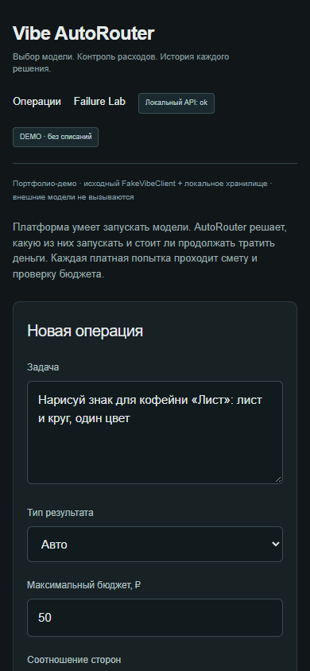

01 / VIBE AUTOROUTER
Выбор модели —
это решение о расходах.
AutoRouter выбирает подходящую модель и объясняет почему. Каждая платная попытка проходит оценку стоимости и проверку остатка бюджета.
Результат
До платного вызова проверяется бюджет; повторный запрос защищён от повторного выполнения, а при ошибке действует заданный fallback-сценарий.
Польза
Несколько AI-провайдеров работают через единый управляемый слой с контролем лишних платных вызовов.
Самая дешёвая из совместимых.
Сначала способности модели и параметры задачи. Потом цена.Что происходит
до запуска.
AutoRouter определяет тип результата и требуемые возможности.
Неподходящие модели отсеиваются до ранжирования.
Смета сравнивается с доступным бюджетом до платного вызова.
Если бюджета не хватает, запуск блокируется до расходов.
Маршрут есть.
План на сбой — тоже.
- TIMEOUT
- FALLBACK
- NO BUDGET
- STOP
- DUPLICATE
- IDEMPOTENCY
- UNSUPPORTED
- NO ROUTE
Если запрос повторяется или операция завершается ошибкой, система следует правилам идемпотентности и fallback.
Выбор модели
под контролем.
До платного вызова система сопоставляет совместимость, стоимость и остаток бюджета. Повтор запроса не создаёт повторную операцию.
Совместимая модель под требования задачи.
Проверка сметы до запуска.
Правила повтора и запасного маршрута при сбое.
Экран выбора модели.
Интерфейс показывает выбор модели, предварительную смету, бюджет и историю решений.
